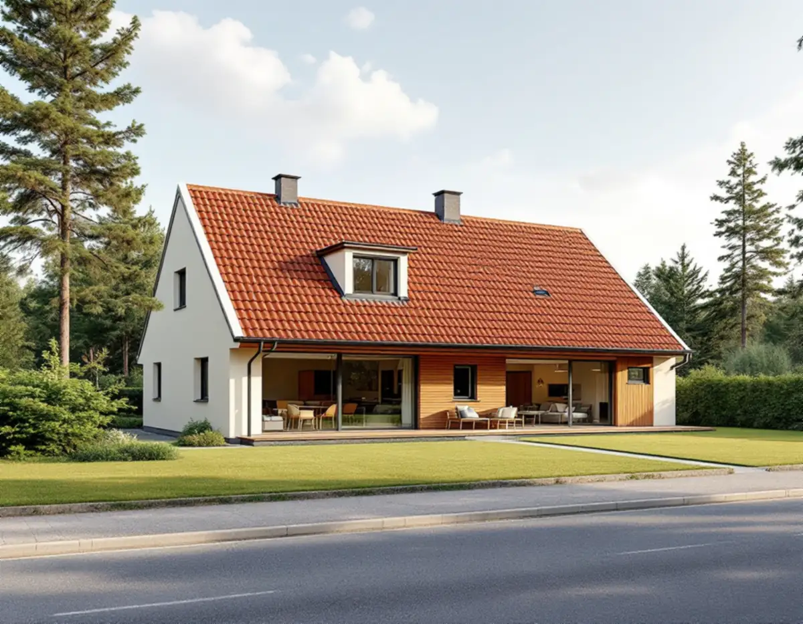
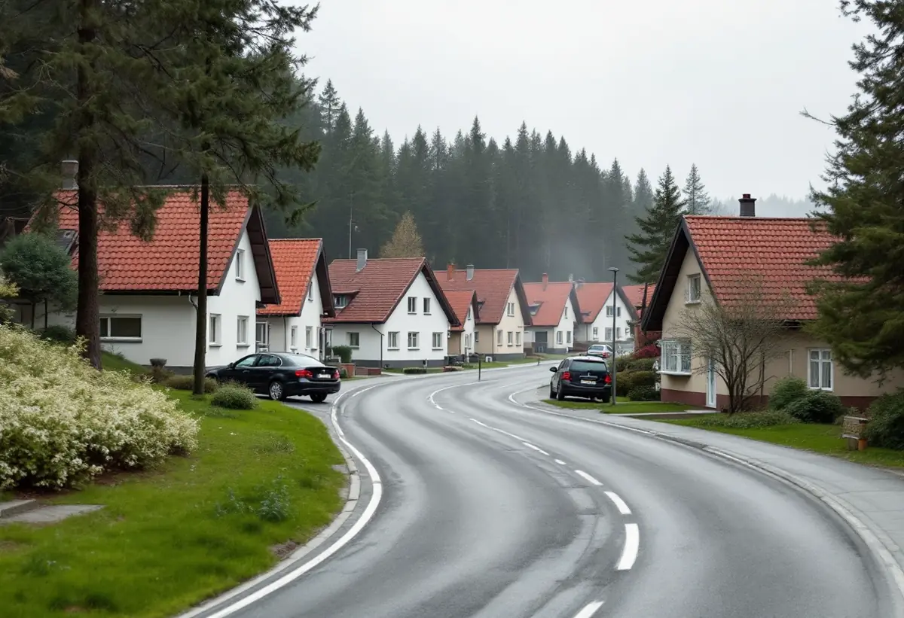
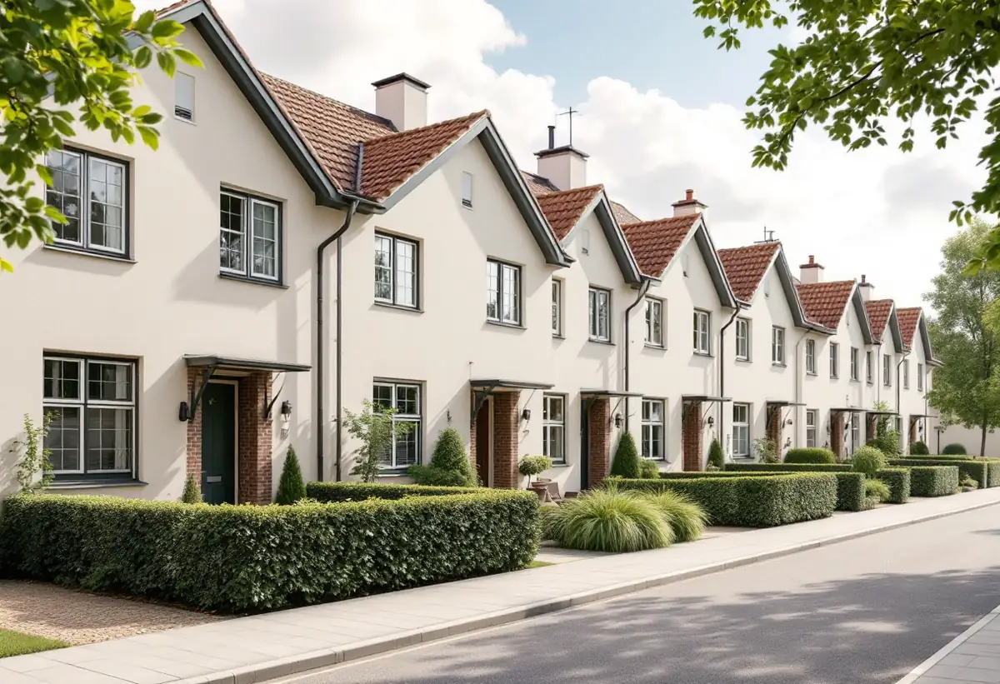

Platsbesök
Vi mäter huset, tidigare tillbyggnader och avstånden till gränserna.
Sedan 1 december 2025 kan fler tillbyggnader göras utan bygglov i Järfälla, men kommunen påminner om att reglerna för gränser, kulturmiljö och skydd mot översvämning fortfarande gäller. Geal Entreprenad AB reder ut vad som gäller för ditt hus och bygger till med total entreprenad.

Järfälla kommun skriver att flera åtgärder som tidigare krävde bygglov blev lovbefriade den 1 december 2025, och tillbyggnad är en av dem. Det som avgör är bland annat avståndet till tomtgränsen, byggnadsarea och höjd, skriftligt grannemedgivande, närheten till järnväg, om byggnaden eller området är särskilt värdefullt och vad detaljplanen säger.
Enligt Boverket får en lovfri tillbyggnad vara högst 30,0 kvadratmeter sammanlagt, och tidigare lovfria tillbyggnader räknas in. Den ska stå minst 30 meter från en järnvägs mitt om infrastrukturförvaltaren inte har gett sitt skriftliga medgivande. Kommunen påpekar dessutom att du måste hålla dig inom den totalt tillåtna arean för komplementbyggnader, komplementbostadshus och tillbyggnader.

Två saker i kommunens text är lätta att missa. Lovbefriade åtgärder får inte strida mot skyddsbestämmelser om markförorening, olyckor, översvämning eller erosion. Och de lovbefriade åtgärder som inte är undantagna från detaljplanen får bara avvika från planen om avvikelsen är liten och inte motverkar planens syfte.
Vi läser därför detaljplanen för fastigheten innan vi ritar, och vi ser efter om det finns planbestämmelser om exempelvis översvämning. Grannemedgivanden ska vara skriftliga, och om tillbyggnaden väsentligt påverkar brandskydd, bärande konstruktion, vatten, avlopp eller ventilation krävs anmälan och startbesked.
Järfällas kulturmiljöplan beskriver villaområdet vid Stålringen och Tennringen i Kallhäll, som byggdes i början av 1960-talet av Widmark & Platzer med Lars Henschen som arkitekt. Husen ligger med gavlarna mot gatan, har beige spritputs och branta sadeltak med rött lertegel. Stadsplanen tillåter en byggnadsyta på högst 200 kvadratmeter, så det finns byggrätt kvar, men en smal remsa närmast gatan får inte bebyggas.
Planen ger rådet att tillbyggnader bör läggas mot trädgårdssidan och att nya takkupor bör harmoniera med husens utformning. Den konstaterar samtidigt att det inte finns något särskilt skydd för de kulturhistoriska värdena där. Vi ritar ändå gärna efter rådet, eftersom gatubilden med gavlarna är det som gör området enhetligt. Planen beskriver också hur gatan lagts som en slinga på sluttande mark och hur delar av den ursprungliga barrskogen har sparats i områdets utkanter.
I Bolinderbyn byggde Bolinders radhus och villor åt sina anställda. Kulturmiljöplanen berättar att radhuslängorna längs Bolindervägen började byggas 1945 och att det sammanlagt blev 21 längor. Radhusen upplåts med bostadsrätt, medan villorna är privatägda.
Den skillnaden är viktig för en tillbyggnad. I ett radhus med bostadsrätt är det föreningen som äger huset, och en utbyggnad kräver föreningens tillstånd innan något annat. I en villa är det du som fastighetsägare som ansvarar för att lagen följs. Läs gärna även om attefallshus i Järfälla om du väger en utbyggnad mot ett eget gårdshus, och om utbyggnader i allmänhet under tillbyggnad.

Vi mäter huset, tidigare tillbyggnader och avstånden till gränserna.
Planbestämmelser, skyddsbestämmelser och kulturmiljö kontrolleras.
Förslag mot trädgårdssidan med konstruktionsunderlag.
Anmälan och startbesked där bärande delar eller installationer berörs.
Grund, stomme, tak och anslutning till befintligt hus.
Den nya delen tas i bruk efter slutbesked.
Rotavdraget gäller arbetskostnaden, inte material. Skatteverket räknar en tillbyggnad av ett bostadshus som rotarbete om någon av dess sidor sitter ihop med husets yttervägg till minst 75 procent eller om en dörr förbinder de två delarna.
Bostaden ska vara äldre än fem år och större delen av den ursprungliga stommen ska behållas. Där avdraget gäller drar Geal det direkt på fakturan.
Storlek, grundläggning, hur takfall och fasad ska mötas, om väggar mot befintligt hus öppnas, våtrum och installationer samt om det behövs bygglov eller anmälan. Efter ett gratis platsbesök får du ett skriftligt kostnadsförslag.
Mer boyta i samma hus.
Tillbyggnad →Takbyte, takbesiktning och plåtarbeten.
Takläggare i Järfälla →Jakobsberg, Viksjö och Kallhäll.
Takrenovering i Järfälla →Förråd, garage och ateljé som blir bostad.
Attefallshus i Järfälla →Planbesked, extra bostad och ansvar.
Byggföretag i Järfälla →Underhållsmålning i rätt tid.
Fasadmålning i Järfälla →Kedjehus, sekelskiftesvillor och parstuga i Stäket.
Fasadrenovering i Järfälla →Bruksvillor, radhus och 70-talsfönster i Järfälla.
Fönsterbyte i Järfälla →Bottenstycken, bleck och vita omfattningar.
Fönsterrenovering i Järfälla →Kedjehus, egnahem och gamla golvskikt.
Golvläggare i Järfälla →Slipa och behandla trappan i huset.
Golvslipning i Järfälla →Kedjehus, radhus och souterräng.
Köksrenovering i Järfälla →Stuprör, skärmtak och plåttak i Järfälla.
Plåtslagare i Järfälla →Förgårdar, förråd och ytterdörrar.
Snickare i Järfälla →Lovfritt takbyte och papperen du sparar.
Takbyte i Järfälla →Ny tapet på skivväggar i radhus.
Tapetsering i Järfälla →Radhus, kedjehus och souterränghus.
Badrumsrenovering i Järfälla →Putsade radhus, kedjehus och villor i Järfälla.
Målare i Järfälla →Flytta badet och mät radon.
Totalrenovering i Järfälla →